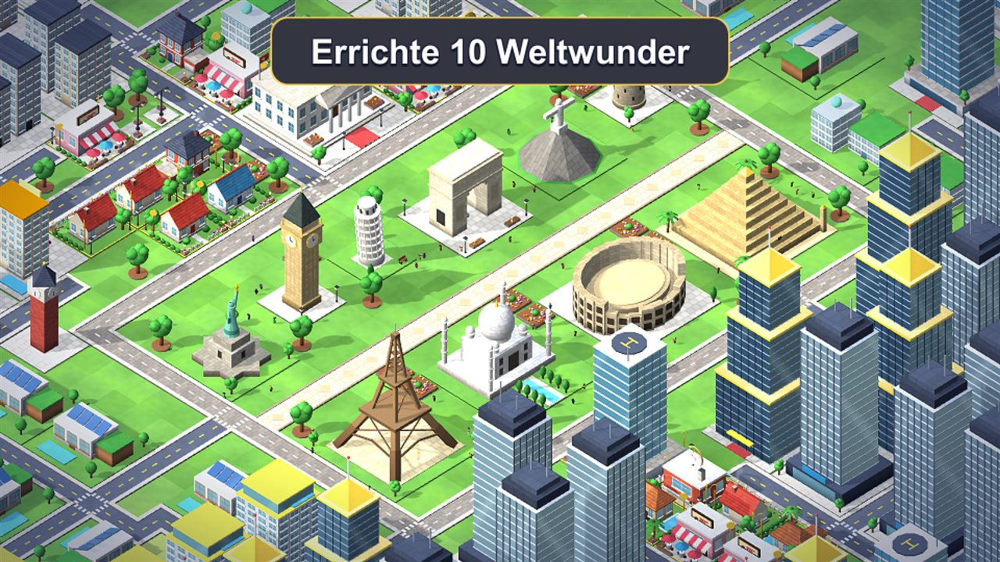

Vermisst du die klassischen Aufbauspiele? Lerne Money City kennen
Um 2010 spielten Millionen Menschen soziale Aufbauspiele auf Facebook wie Millionaire City, CityVille und SimCity Social. Du hast eine Stadt gebaut, Münzen von deinen Häusern eingesammelt, dein Land erweitert und jede Ecke dekoriert. Viele dieser Spiele gibt es heute nicht mehr, aber das Gefühl, das sie vermittelt haben, bleibt in Erinnerung. Money City ist ein neues, eigenständiges Spiel für alle, die diese Art zu spielen vermissen.
Einfaches Bauen, ein zufriedenstellender Moment bei jedem Geldeinsammeln und eine Stadt, die langsam von ein paar Häusern zu einer Skyline heranwuchs. Du konntest zwei Minuten oder einen ganzen Abend spielen, und es gab immer einen Grund, zurückzukommen.
Wie Money City dieses Gefühl zurückbringt
Money City ist ein gemütliches Aufbau- und Wirtschaftsspiel für Android. Du baust Häuser, schließt Mietverträge von 1 Minute bis 3 Tagen ab, kassierst die Miete mit einem Tippen und machst aus einem kleinen Dorf eine Megastadt. Du kaufst neues Land auf einer Insel mit fünf Gebieten, verbesserst Gebäude auf 5 Sterne, dekorierst mit Parks und Statuen und baust 10 Weltwunder, die dein Einkommen steigern.
Was heute anders ist
Money City ist ein Einzelspielerspiel und funktioniert offline. Du brauchst kein Facebook-Konto, keine Freunde, denen du Anfragen schickst, und keine Internetverbindung. Werbung ist freiwillig: Du siehst sie dir nur an, wenn du einen Bonus möchtest. Das Spiel ist in 12 Sprachen verfügbar und startet in der Sprache deines Handys.
Mietverträge abschließen, Miete kassieren

Errichte 10 WeltwunderErweitere in 5 einzigartige Gebiete
Häufige Fragen
Hat Money City etwas mit Millionaire City, CityVille oder SimCity Social zu tun?
Nein. Money City ist ein eigenständiges Spiel eines unabhängigen Entwicklers. Es steht in keiner Verbindung zu diesen Spielen oder ihren Inhabern und wird von ihnen weder unterstützt noch empfohlen.
Ist Money City den klassischen Facebook-Aufbauspielen ähnlich?
Es teilt die gleiche entspannte Idee, eine Stadt zu bauen und Miete von deinen Gebäuden zu kassieren, ergänzt um moderne Mobile-Funktionen wie Offline-Spiel, Mietverträge, fünf Gebiete und Weltwunder.
Brauche ich Facebook oder Freunde, um Money City zu spielen?
Nein. Money City ist ein Einzelspielerspiel. Du kannst allein und offline spielen.
Wo kann ich Money City spielen?
Money City ist für Android bei Google Play erhältlich.
Millionaire City, CityVille und SimCity Social sind Marken ihrer jeweiligen Inhaber. Sie werden nur genannt, um eine Art von Spiel zu beschreiben. Money City steht in keiner Verbindung zu diesen Spielen oder ihren Inhabern und wird von ihnen nicht unterstützt.